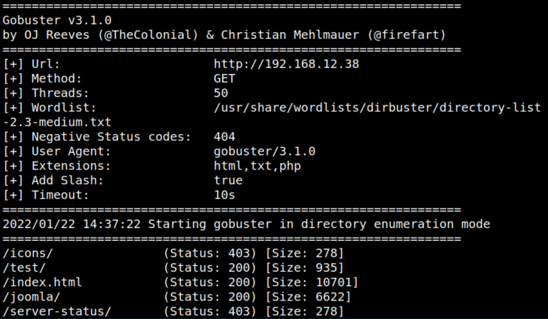
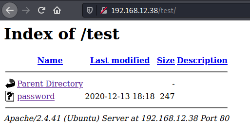
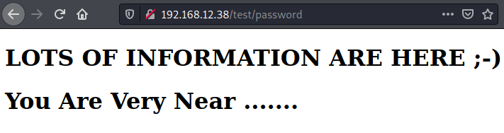
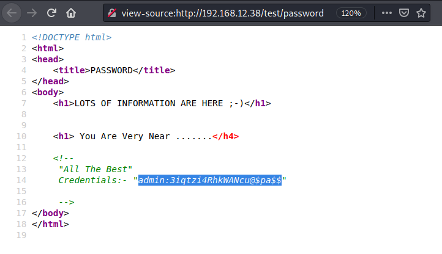
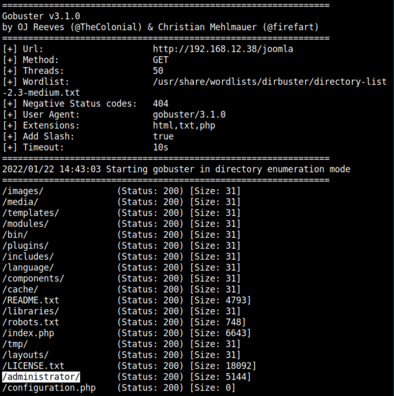

3.1 Webserver with Gobuster
Brute force with “gobuster”.
Discover the directory and files on the webserver.
1. On your Kali Machine run the following command.
$gobuster dir -f -t 50 -x html,txt,php -u http://192.168.12.38 -w /usr/share/wordlists/dirbuster/directory-list-2.3-medium.txt
Output:

There are two interesting directories: “test” and “joomla”.
2. Navigate to http://192.168.12.38/test/.

3. Click on the “password” file.

4. Show the page source.

There are some credentials.
Username: admin
Password: “
3iqtzi4RhkWANcu@$pa$$”4. Run “gobuster” again with “joomla”.
$gobuster dir -f -t 50 -x html,txt,php -u http://192.168.12.38/joomla -w /usr/share/wordlists/dirbuster/directory-list-2.3-medium.txt
Output:

There's a directory called “administrator”